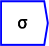
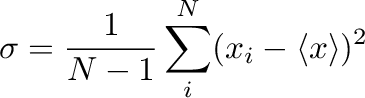

Next: -th moment
Up: Statistical Operations
Previous: Median
Contents

The operator can be placed on the canvas in two ways:
- From the Statistics (``statistics'') toolbar
 ;
or
;
or
- By typing the letters ``stdDev'' on the canvas and then pressing the
Enter key
Returns the standard deviation along a named dimension of all elements
present. If the dimension is not named, then the standard deviation
is over all elements present in the tensor. Note that missing elements
are not counted.
